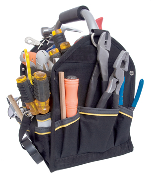

Module 6—Petrochemicals
Lesson 6—Condensation Polymers

© microstocker/shutterstock
 Get Focused
Get Focused
You now know that polymers are important substances that have many uses. Addition polymers, which you studied in Lesson 5, are formed when monomers with double bonds join to make much larger molecules. Have you studied other reaction types that can also connect smaller molecules to make larger molecules?
In Lesson 4 you learned about esterification reactions, a type of condensation reaction in which a water molecule is formed when alcohol and organic acid molecules are joined together. Could this reaction type be used to make a polymer?
In this lesson you will learn how condensation polymerization reactions can be used to produce both synthetic (such as plastics) and natural polymers including proteins, lipids, and carbohydrates. You will compare many natural and synthetic polymers and their respective properties.
Consider the following questions as you complete Lesson 6:
- How do natural and synthetic polymers compare?
- What are other reaction mechanisms by which polymers can be made?
You will also take another look at how the petrochemical industry, and its offshoot industries like the plastics industry, are attempting to green their practices.
 Module 6: Lesson 6 Assignment
Module 6: Lesson 6 Assignment
Download a copy of the Module 6: Lesson 6 Assignment to your computer now. You will receive further instructions on how to complete this assignment later in the lesson.
You must decide what to do with the questions that are not marked by the teacher.
Remember that these questions provide you with the practice and feedback that you need to successfully complete this course. You should respond to all the questions and place those answers in your course folder.